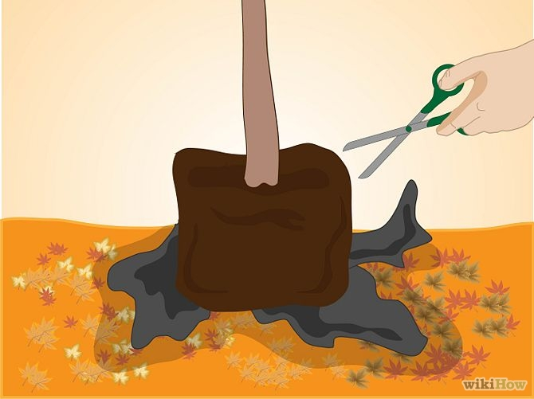
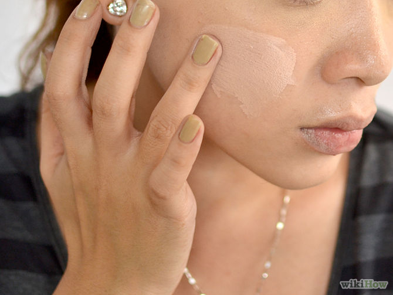
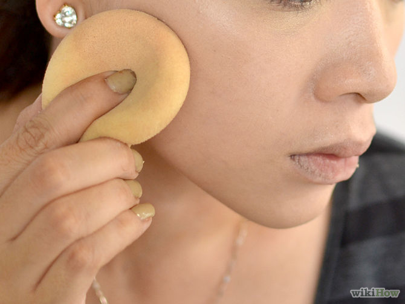
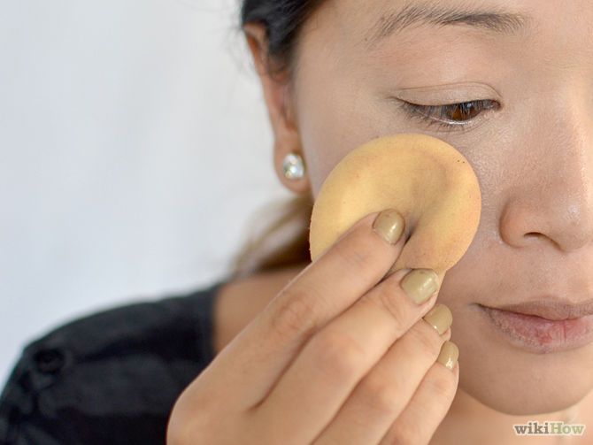
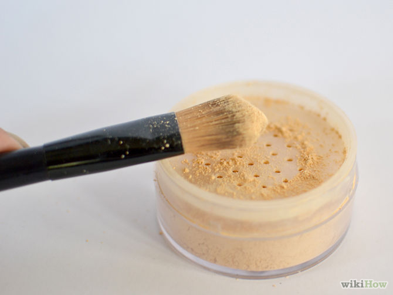
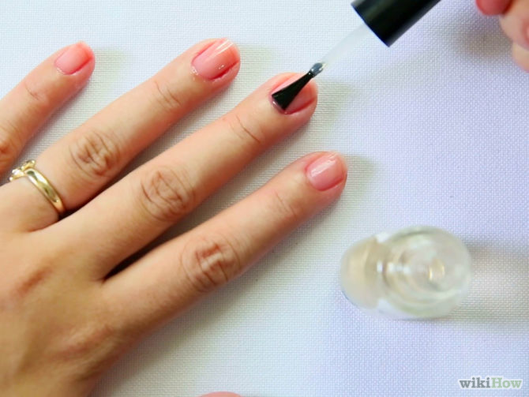
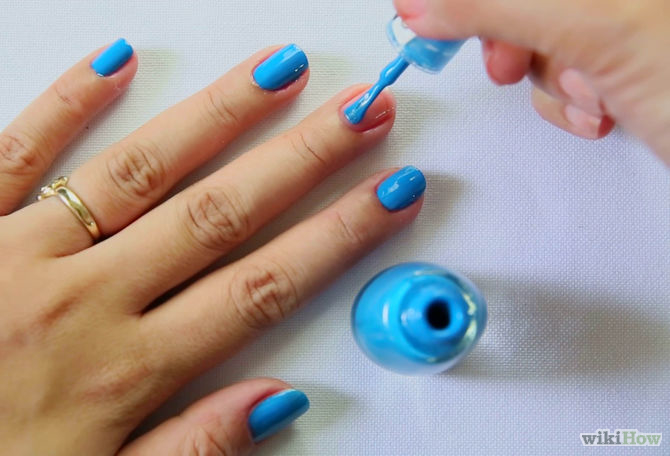
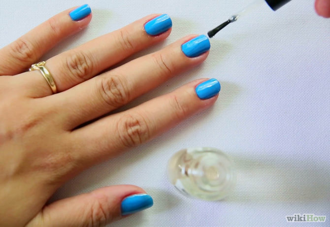
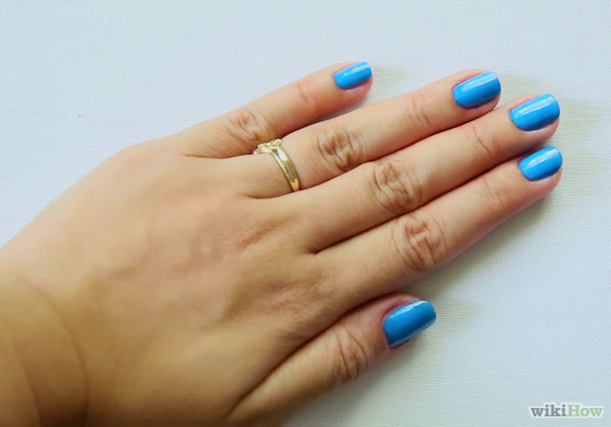

Home can look very different from one family to the next. It may be laden with traditions, or laissez-faire. It may include many people, or only a few. Home can be one location with strong roots, or spread over several locations. Regardless of how home life functions, it is where families of all types grow together. This environment is strengthened when it is a place of respect, kindness, consideration, and honesty.
Families today are often self-defined and are more diverse than ever. Travel, culture, different manners of education, adoption, remarriage - there are many facets to a familiy's make-up. Surface values may vary, but consideration and respect are found at the root of the strongest relations. A family, whatever that looks like, should be a foundation for moving through life.
The decision to grow your family is one of the most significant choices you will make. It is a decision that effects multiple people, as well. While there are many matters that should remain private, there are others that you will want to share. Along with pregnancy, birth and adoption comes an array of etiquette issues, starting with who to tell and when.
Social development is a process in which children learn how to interact with the world around them. They learn about how to do this from family, friends, media and just trying things out for themselves. Manners are one aspect of growing and learning, and they expand from communication basics to table manners to how to act when out and about in various situations.
Starting off at a new school and living on your own for the first time can be difficult to handle at first. With new social situations come new standards. Similarly, entering the job market for the first time can lead to confusing situations, with questions about interviews, proper appearance, and making good impressions. Keep in mind some basic etiquette, and the perils of independent life can be conquered.
A key agricultural art is crop cultivation, which includes growing food crops for both humans and livestock. The art and science of crop cultivation also consists of maintaining soil fertility, experimenting with disease-resistant hybrids and proper irrigation of fields. Modern crop raising is changing because of the need for sustainable and profitable crops, constantly seeking new technologies to keep farms viable and crop production at optimal levels.
Another key agricultural art is livestock management. livestock management includes not only animals such as cows, pigs, sheep and poultry but also fish, bees and exotic animals such as emus and ostriches. Like all agricultural arts, livestock management is interdisciplinary and involves knowledge of anatomy, rudimentary veterinary care and even business as it relates to marketing of livestock.
Increasingly, soil and water conservation are being integrated into the agricultural arts. Conservation is critical in maintaining sustainable agriculture, and it is also imperative in managing a profitable farm. Farmers have a responsibility to conserve and protect natural resources on their property, dispose of animal waste in a responsible manner and work their fields in such as manner to prevent erosion and promote soil fertility.
1.Select the right time of year for planting the tree. If you plant your tree at the wrong time of year it's going to be less likely to survive and grow. Do not plant in late spring or summer because the heat will stress the plant and may cause it to die. Of course, all this depends on the type of plant, because different plants have different needs.
A. In general, April and May are the best times to plant in the Northern hemisphere, because the tree has all summer to grow and get accustomed to its new abode. Otherwise, September and October are your best bet. It tends to be cooler and rainier and the trees are getting ready for hibernation.
B.Certain trees don't do well if planted in the fall, like oaks (nut trees) and birches. Container trees tend to do better if planted in the fall than trees in burlap or trees that are baled, because these tend to go into transplanting shock in the fall.
2.Check to see if there are any local requirements about digging. These types of requirements tend to concern digging deep holes near telephone and other cables (for example, in urban areas). You'll need to make sure that you know where these cables and systems before you dig..
3.Choose a suitable tree for the region, climate, and space. Trees native to your area tend to do well, and you won't be introducing a potential invasive plant species. It will be easier to care for a tree that is already native to the area.
-Research local cultivars of species native to your area. If you are willing plant a non-native species, consider carefully why and whether it's actually a good idea to do so, since non-native trees can be invasive and damaging to the ecosystem of your area.
4.Prepare the hole. Take a suitable shovel and dig a hole that is 4-5 times the width of the root ball, more than enough so it will fit, and give room for the fresh roots to grow without stress. This lets the roots ease in more easily and begin to grow outwards into the soil. No need to cut off the wire root basket if there is one, the roots will grow through and it will prevent damage to the root ball during planting.
A.Try to dig the hole with a small "pedestal" of dirt in the center of the hole where the tree will rest. The hole should be a little deeper around the edges but there should be a pedestal of dirt in the center where the root ball sits. This pedestal prevents the root ball from sitting continuously in water. Any excess water will naturally flow to the deeper areas of the hole around the edges where the roots can drink from if needed.
B.Having a pedestal in the center of the hole is very important since one of the major reasons why trees die is "drowning," meaning the tree is getting too much water and the root ball is sitting in a pool of water. The point where the tree comes out of the ground should be slightly higher than the ground around it. Slightly higher means 1/4 to 1/2 inch. This prevents water from collecting next to the base of the trunk which causes the tree to rot.
C.Use the garden cultivator to loosen the dirt all around the hole to make it easier for the roots to spread.
5.Prepare the tree for planting. You need to do this to make sure that you're planting your tree properly and so that it will survive. The process is slightly different for a small tree and a large tree.
A.If it is a small tree, then you can turn it upside down gently to get it out of the pot. You could also cut some plastic containers to remove them.
B.If the tree is larger and has a net or a hessian or rope bag, you might need to use large scissors or a sharp knife to cut through the packaging. Avoid handling the tree with the burlap off. Put it in the hole, then cut the burlap and rope from around the trunk of the tree, leaving the wire basket. The goal is to keep as much dirt around the roots as possible; moving the tree more than absolutely necessary can easily cause air to get to the roots and dry them out, even inside the root ball.
C.Don't leave a tree's roots out of its container or burlap for too long. Especially in sun and wind, it could dry out and damage the roots.
6.Use a seed for planting. Follow this step only if you're going to be growing a tree from a seed. Growing a tree from a seed means germinating the seed, planting it at the appropriate time and taking close care of it. This way takes a bit longer than planting by transplanting a tree from a container.
A.To germinate a seed you may have to use scarification, which means that you break the seed coat and allow moisture to penetrate so that the plant embryo can begin germinating. You can also use the cold stratification process which means that you mimic the over-wintering process and expose the seed to cool, moist conditions.
B.Once the seeds have germinated in a normal fashion, plant them in an individual container or a seed tray. The seeds for the different trees will be different, so follow the instructions accordingly for each. When they've germinated, move them to a brighter location and make sure that they are well ventilated.
C.Remember, different tree seeds will grow differently so you'll need to make sure that you follow the instructions for each individual tree. An apple tree will grow differently than a cherry tree or a pine tree.
Industrial arts represents the study and practice of technical design including furniture, automobiles and toys. Industrial artists serve many purposes in society and cultivate technological advancement through careers in automobile design and computer-aided drafting. The demand for people skilled in the industrial arts transformed over the years and includes a need for individuals skilled in a particular area, such as appliance design.
Industrial arts began as early as prehistoric times when human beings first developed tools, according to the Journal of Technology Education. Formal instruction for industrial arts arose during the late 1800s and consisted of manual training for trades in manufacturing. Industrial arts education became popular in the 1900s as an alternative for students seeking to learn a trade. Known as vocational school, the purpose of industrial arts classes included teaching students specific skills such as automobile repair or furniture design. Today, the meaning of industrial arts encompasses a wide variety of technical specialties.
The purpose of industrial arts incorporates societal factors such as technology with personal career development. A student trained in an industrial art contributes to the advancement of society regardless of whether the career is in manufacturing or design. For example, a graduate of an industrial arts program with a focus on machinery learns advanced safety techniques and methods of streamlining manufacturing. A design student creates new and advanced packaging for toys, which reduces waste.
Careers in industrial arts have taken on a new meaning since the inception of the field. Early on, industrial arts meant learning the required training for a craft comprised of manual labor. For example, a student taking industrial arts classes in furniture design in the mid-1900s learned how to use the proper tools to create a standard piece of furniture designed by a corporation. A career in industrial arts in modern times offers the student a chance to be the one to design the furniture
The meaning behind the demand for people trained in industrial arts changes with the needs of the employing corporations. For example, the demand for industrial artists during the 1940s included people adept at shortwave radio design for use in World War II, according to the Encyclopedia of Chicago. Economic changes and increased commercialism raise the overall demand for skilled industrial artists. Talented designers offer companies an edge over the competition and provide society with the desired technologically advanced products. For example, appliance companies always have a demand for new industrial artists able to provide distinct and innovative designs, such as the recently popular stainless steel finish.
Industrial arts provides benefits to a wide assortment of people. Students lacking the skill or desire to study math and science obtain a career in industrial arts by learning a trade such as mechanics. People proficient in math and science study and put the knowledge to use by designing new products. Others go on to teach an industrial art such as woodworking
LESSON 1 – Competencies required of an Effective Entrepreneur PERSONAL ENTREPRENEURIAL CHARACTERISTICS (PECs) has three clusters:
1. ACHIEVEMENT CLUSTER Opportunity Seeking - sees and acts on new business opportunities
Persistence - a persistence individual takes repeated or different actions to overcome obstacles to his/her goals - stick to his judgment in the face of opposition or early lack of success - makes personal sacrifices
Commitment to the Work Contract - should accept full responsibility - pitch in for others to finish the job - express concern towards the customer
Demand for quality and efficiency - do things that meet existing standards of excellence - strive to do things better, faster and cheaper
Risk Taking - take moderate risks - state a preference for situations that involve moderate risks
2. PLANNING CLUSTER
Goal setting - should always have clear and specific objective –- a long-term and short term objective -- - they are guided by the word SMART (specific, measurable, attainable, realistic and time-bound)
Information Seeking - entrepreneurs do not stop seeking information for their businesses for improvement of the company - information-seeking on clients, supplies, and competitors
Systematic Planning & Monitoring - developing & using logical, step by step plans, evaluate, monitor progress & switch to alternative strategies WAYS THAT ARE USED BY THE ENTREPRENEURS TO EXERCISE SYSTEMATIC PLANNING & MONITORING learn from mistakes constantly review performance Concentrate on present situations go back & review goals If still unproductive, accept changes, but find other means to achieve goals Tries to change environment if the environment is the cause of the low standard performance
3. POWER CLUSTER
Self-confidence - possess a strong believe in their abilities - express confidence in their own ability - they believe their business to be successful and profitable
Persuasion & Networking - should use deliberate strategies to influence others -use their business & personal contact to accomplish their objectives
Assessing Oneself as a Potential Entrepreneur
FUTURE ENTREPRENEURS MAY BE GUIDED BY THE FF:CHECKLIST
1. Do you enjoy challenging task?
2. Is your academic standing something to be proud of?
3. Did you receive good grades for your school behavior?
4. Do you often feel that you can do a better job than others?
5. Are you active in community affairs?
6. Can you make good decisions?
7. Are you willing to change your negative habits?
8. Did you have any experience in selling?
9. Do you have relatives or associates who are in business?
Problems Faced By Entrepreneurs
FUTURE ENTREPRENEURS MAY BE GUIDED BY THE FF:CHECKLIST
1. Financial problems - lifeblood of business is money - it is a must to have your own money before staring a business
2. Managerial problems - lack of management skills of the entrepreneur - should think well before giving instructions to avoid poor management
3. Marketing problems - some of these are problems with competitors, taxes & advertising costs
4. Over-regulation & taxes - amount of income for reinvestment is reduced by corporate income taxes
5. Problems relating to facilities - production & sales are solved by problems of power supply, transportation & communication
Choosing to create a new business, or even to purchase an existing one, is a decision that has a far-reaching impact. Long hours, poor pay, and an unclear future are only three of the challenges a budding entrepreneur must face. And, of course, losing everything one invests in a business is a very real risk. In fact, while 885,416 new employer firms were created in 1997, as reported by the U.S. Department of Labor, 857,073 businesses were terminated during the same year, with 53,826 of these being bankruptcies and 83,384 being failures. Failures and bankruptcies are business closures that occur while the business owes debts.
Planning is a key ingredient in the success of an entrepreneur. A business plan helps to guide the decision making needed to operate a business. The first decision is to choose what sort of business to own. The business may be:
A retail business that markets a tangible product (such as clothing, houses, food) A wholesale business that acquires goods from a producer and distributes requested quantities to retailers A service business that offers an intangible product (such as insurance, haircuts, consultant services, construction, financial services) A manufacturing business that produces a product Of course, a business may perform more than one of these functions.
Marketing is a process in which the decisions of the business are based upon the goals of the organization. One of these goals is usually that of satisfying the needs and wants of potential customers or a target market. Potential customers can be divided into specific market segments that represent groups based on specified characteristics. For example, a business may strive to serve those in their late teens and early twenties who live primarily in large cities. Narrowing the segment even further, the business may offer goods or services for those interested specifically in sports—both as active players and as spectators or fans. Thus the business may sell athletic shoes and clothing, sports equipment, and how-to books. The owner(s) would locate this business in an area with a large number of people in that age group. Other factors to consider when defining a target market include such demographic factors as income level, sex, marital status, and ethnic group, and such geographic factors as climate and region of the country.
The product is the goods and/or services offered by the business. A travel agent may offer the service of arranging any type of trip to anywhere in the world or may specialize specifically in cruises. Choosing products is dependent on the market segment the business intends to serve. Other considerations include the amount of physical space available for storing the product, the amount of funds needed to purchase the product from the wholesaler or manufacturer, and the profitability potential of offering the product. Another important consideration is the product's life cycle. A life cycle has four sections: introduction, growth, maturity, and decline. When a new product is introduced to the market, it is in the introduction phase. Over time, it may grow in popularity and sales, reaching a point of maturity. Maturity is then followed by decline. An entrepreneur must be careful to avoid offering products or services that are in decline. That is one of the reasons for continually monitoring the sales of products and adjusting the product mix to reflect such changes in the product life cycle.
Another factor in the marketing mix is place. Marketers often say that the success of a business is dependent upon "location … location … location." Choosing the location of the business is an important decision that must take into consideration such factors as the chosen target market, traffic patterns, parking availability, population trends, competitive businesses, rental costs, and other expenses. The place function also includes business activities that involve physical distribution, such as transporting goods, handling the goods, storing the goods, and keeping track of the goods (inventory).
The American Heritage Dictionary defines cosmetology as "the study or art in cosmetics and their use". They define cosmetics as "serving to beautify the body and improve the appearance of a physical feature." Cosmetology is a broad term that is used to encompass a wide range of beauty mediums, including hair, skin, nails, and makeup. Schools that offer cosmetology degrees have crafted their curricula to address all of these categories.
The ability to adapt your new found skills to different people. Everyperson will present a unique challenge to the cosmetologist as each individual will have a different combination of hair type, face type, nail type, etc. This is one of the greatest challenges in cosmetology careers. For instance, the kind of blush work a makeup artist performs will depend on the shape of the client's face: a round face will require a fair amount of contouring while someone with well-defined cheekbones will only need to highlight this feature
Fields in Cosmetology
Makeup Artist
-Makeup artists are cosmetology specialists who can work with individual clients at a salon or for groups of people at special events. Their job description generally involves applying makeup to clients to make them look good or give them the look that they want to achieve. Some of the areas that makeup artists are usually trained to do include: matching the right makeup colors to skin tones; bringing out facial features through the clever use of makeup; and hiding blemishes and other imperfections. Today, courses in makeup application are one of the most popular among the cosmetology courses so you should be able to find a school and a program which would provide you with the knowledge you need to become a good makeup artist later on.
Hair Stylist
-A hairstylist or a hairdresser is an individual who is knowledgeable and trained in cutting, coloring and styling the hair of their clients. To become a hairstylist, you should first take hairstyling and hairdresser training program
Nail Technician
-Nowadays, nail technicians are no longer just individuals who are only trained in doing manicures and pedicures for their clients; as cosmetology courses such as nail technician courses already cover topics about how to do nail art and how to do various types of nail and hand treatments
Hair Stylist
Electrologists are individuals who are specifically trained in electrolysis or the permanent removal of facial ad body hair. This is another popular profession in the field of beauty and personal care services because a lot of people nowadays are choosing to have their unwanted
1.Wash your face with your usual cleanser and use lukewarm water to rinse the face. Use a patting motion to towel dry the face.
2.Apply your usual moisturizer to your entire face. Place the cosmetic sponge over the opening of the bottle of foundation. Allow the foundation to dispense onto the sponge.
3.Apply foundation by using a dabbing motion. Place the foundation on 3 different spots on the forehead. Start from the right side and work your way to the left side. Copy this same application on both of the cheeks, the chin, the jaw line and the nose area.
4.Use the same side of the foundation sponge with which you applied the foundation to blend in the color to the face. Use a combination of a rubbing and patting motion with the cosmetic sponge until all of the foundation is blended into the skin.
5.Make sure to blend in the makeup near the jaw line. Blend the makeup down towards the neck to eliminate any foundation lines close to the jaw line and neck.
6.Pat under the eye area with any excess foundation on the sponge. Blend in the foundation into the area underneath the eyes./p>
7.Take the powder brush and place it into the powder. Dab the powder with the powder brush until the entire powder brush is covered with the powder.
8.Tap the powder brush lightly on the counter, to remove any excess powder. This prevents your makeup from looking cakey.
9.Use a blotting motion with the powder brush to distribute the powder evenly over the foundation on the face. The powder helps to set the foundation and keeps skin from looking oily.
OUTPUT
1.The best time to apply nail polish is when they are completely dry. If you apply nail polish while your nails are wet, or right before they will become wet, they will be prone to chipping. Start off by filing your nails in the desired shape. Buffing them also helps to smooth the nail base and makes it easier to apply nail polish.
2.Start by applying a clear base coat. First, take a good amount of polish on the brush and apply a coat right in the centre of the nail. Take some more polish on the brush and apply coats on the two sides of the nails. Make sure that the entire nail is covered in these 3 swipes. Never keep on repainting the nail, it thickens the polish and you may smudge it. Let the base coat dry completely.
3.After the base coat is done - apply the colour of your choice to the nail. Apply it in similar fashion, first in the centre of the nail and then on the sides. Once all your nails are done, wait for it to dry. If the colour that you've applied is really light, it needs another coat. So apply the second coat and make sure it dries.
4.Apply a top coat and let it dry. If you want to, you can apply a fast-setting top coat (available in beauty stores) and make sure it sets really soon. If you don't have a top coat, dip your fingers in ice cold water. This sets the nails polish and gives it a nice shine.
5.If you've gotten some nail polish on your cuticles, fingers or anywhere else, don't worry. Dip a Q-tip in some nail polish remover and gently remove the extra polish. This will make sure your nail polish job is clean and neat.
6.After you are completely done with applying nail polish, you can dip your nails in cold water, this helps a lot because it hardens the nail polish and stays neat. If you would like to take a shower after applying nail polish make sure it is dry and be sure NOT to take a hot shower, this will melt the nail polish.
7.Finished.
1.Know how to do the seven section parting technique. Doing this will prepare the hair for when you cut and style it, and will make it a lot easier to keep the ends even. You should part the hair so that there are sections on the top, right crown, left crown, right side, left side, right nape, and left nape. Fasten each section with a hair clip.
2.Master the blunt cut. Use the seven section parting technique that you learned above. Comb and then cut each section at the front of your face. Make sure to set cutting guides at the back and front, and then follow them around the head for each section. Keep the scissor blade flat while cutting.
3Cross-check your work. After cutting hair, make sure to cross-check it before letting your client leave the salon. Comb through every section of hair thoroughly and make sure that the hair is level and even. Use caution if you've cut the hair in a very angled style, as this will make cross-checking a bit harder.
4.Layer hair. Wash the hair so that it's wet and clean. Comb it out so that there's no knots. Gather a selected amount of hair and twist it into a tight spiral. Cut off the amount of hair that you want to cut straight across, then release the spiral.
5.Don't let your foils bleed. "Bleeding" in hairstyling is when the product is applied higher than the foils, causing stains on areas of the hair that shouldn't be highlighted. To avoid bleeding, make sure you have clean and clear sections, the foils are folded properly, and avoid applying product at the very top of your foils. Instead, leave a small space before applying product. Also, don't goop on the product. Less is more when doing foils.
6.Know how to trim bangs. Pin up or section the hair that you don't want to trim. Divide the bangs using a fine tooth comb. Cut the hair slowly at a 45-degree angle to the desired length. Make sure that your bangs are dry so that you will know what the real length will be.
7.Master the A-line cut. The a-line is when the hair is angled in a bob so that it's longer in the front and shorter in the back. Use the seven-section method, then cut the sections at the back shorter than the ones at the front, gradually leaving the hair longer each time while you work towards the front of the head.
Developer: Mark Jowel B. Rebogio
Gordon College College of Computer Studies
Technology and Livelihood Education Basic Modues